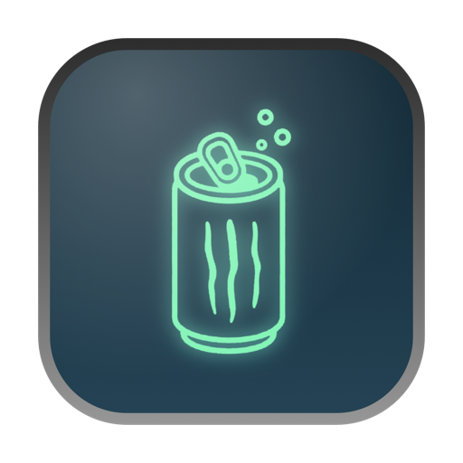

Lid closed
Shut the lid and keep going. No sleep, dimmed screen, or screen saver interrupting the work.

Taurine Star on GitHubKeep your Mac awake for long-running agent sessions, builds, and local servers, even when you close the lid.
Free and open source · macOS 14.6 or later

Shut the lid and keep going. No sleep, dimmed screen, or screen saver interrupting the work.
On battery, Taurine taps out at the charge level you choose. Plugged in, it keeps going.
Quit, crash, force quit, log out, or delete the app while your Mac is running: sleep returns.
Click to keep your Mac awake. Right-click for the details.